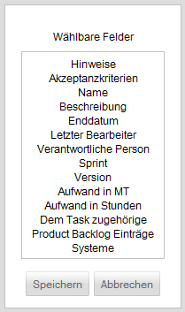

Feld hinzufügen
Einem Tickettypen können benutzerdefinierte Felder hinzugefügt werden, welche zuvor auf der Oberfläche "Feldtypen-, Zustands- und Tickettypen-Erzeugung" im Bereich "Felder" erzeugt wurden.
Nach dem Betätigen des Buttons "Hinzufügen" im Bereich "Felder" wird der folgende Dialog geöffnet, welcher alle definierten Felder zur Auswahl anbietet.

Created with the Personal Edition of HelpNDoc: Full featured Documentation generator